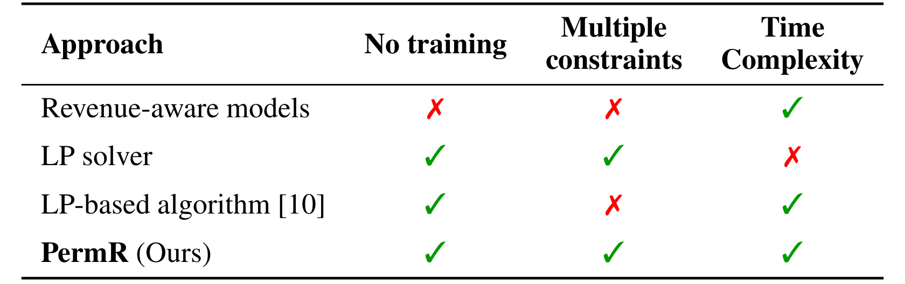
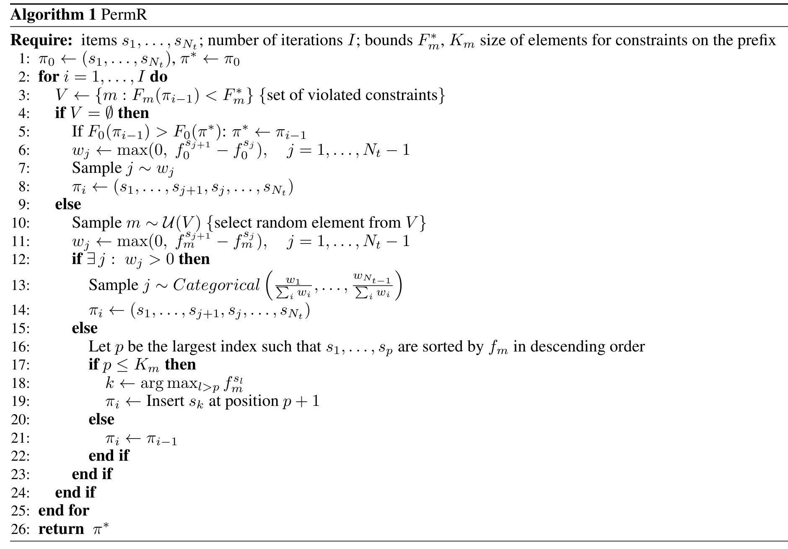
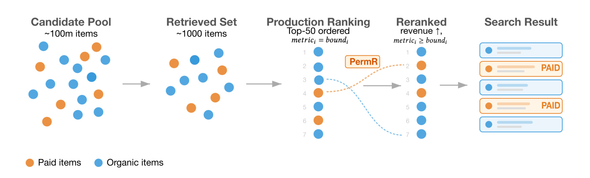
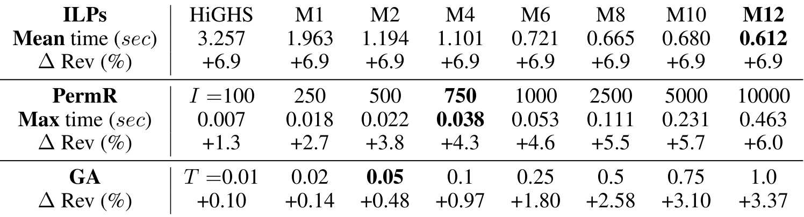
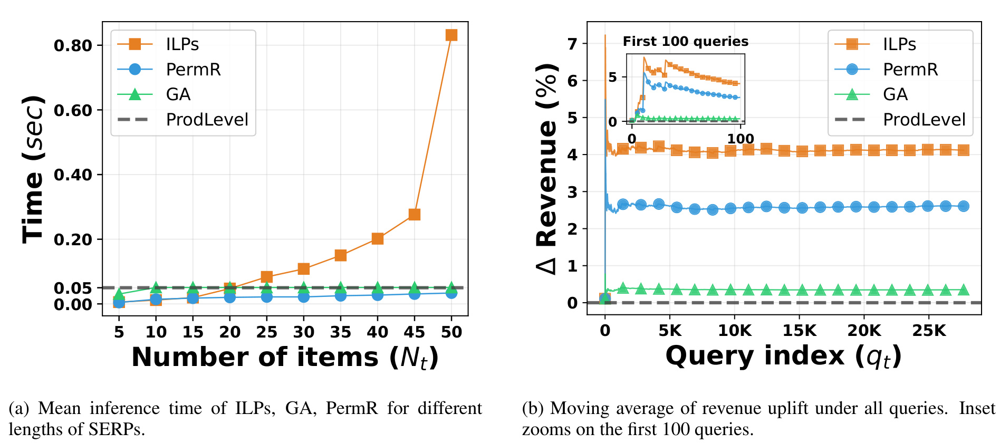
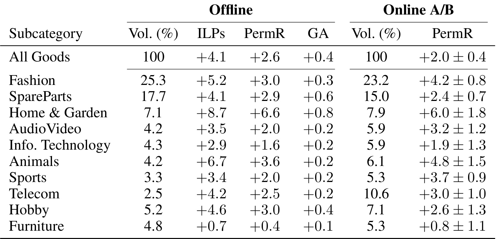

这篇论文提出 PermR，用于电商和分类信息平台搜索链路中的收入约束重排。作者来自 Avito、莫斯科国立大学、AI Center 和 IAI，一作机构是 Avito；本文目录沿用本轮任务分配的“多校-PermR”。论文入口：arXiv:2606.28059。代码状态方面，论文脚注给出 Avito 技术仓库，本轮通过 GitHub 远端 HEAD 检查确认仓库可访问：avito-tech/PermutationReranking。这篇工作的核心不是重新训练一个排序模型，而是在已有高质量生产排序结果之上，用一个很轻的排列后处理层，把付费推广收入往上推，同时不让相关性、欺诈风险、低信誉、私卖家、预付费推广等平台约束掉线。
电商搜索和推荐已经能给出高相关结果，但如果在最顶层只按付费推广收入重排，就可能牺牲相关性、欺诈安全和用户体验；把这些指标写成 ILP 虽然清楚，却无法在实时服务里逐 query 精确求解。PermR 要解决的核心问题，是在不训练新模型、不放松多重约束、也不突破线上延迟的前提下，把已有生产排序轻量改成更高收入的可行排列。
1. 背景和问题
现代搜索和推荐系统通常已经有一条多阶段排序链路：先召回候选，再用一层或多层排序模型逐步重排，越靠后的阶段模型越复杂，也越接近最终展示给用户的列表。对电商或分类信息平台来说，下一步自然会想优化商业目标，例如让付费推广、按点击或按联系计费的商品在不伤害体验的情况下获得更多曝光。但这里有一个很现实的冲突：付费收入信号和用户体验信号并不总是同向。如果简单把高收入商品往前提，相关性可能下降，欺诈风险或低信誉卖家的曝光可能上升，用户会看到更像广告堆叠而不是搜索结果的列表。论文把这个冲突放在“已有生产排序很强”的前提下讨论，因此它不是从零学习一个新排序模型，而是在生产列表最后一层做轻量后处理。
以往路线大致有三类。第一类是 revenue-aware ranking 或 reranking model，把收入目标放进模型训练或 list-wise 学习里。这类方法有机会在训练阶段吸收很多上下文特征，但它们通常需要新模型、持续训练和特征维护；一旦用于收入、欺诈、信誉等会随业务变化而漂移的指标，维护成本会变高。第二类是把多目标通过权重加权成一个 scalarized objective，或者做 Pareto 解集。问题是权重很难稳定解释，Pareto 方法还会给出多个解而不是一个可以直接上线的排列。第三类是 constrained optimization：明确最大化主目标，同时把其他指标写成约束。这个方向更适合线上系统，因为它给出的是一个单一目标和一组可解释边界，但直接求解整数线性规划会在逐 query 场景里太慢。

Table 1 的价值在于把论文的问题定位压缩成三列：是否需要训练、是否能处理多个约束、是否满足生产时间复杂度。收入感知模型虽然能在服务端跑得快，但通常既需要训练，也不天然保证多个约束同时满足；通用 LP 或 ILP solver 不需要训练并能表达多约束，却不符合实时延迟；已有 LP-based algorithm 在速度上更接近生产，但论文认为它主要面向单约束，扩展到多个平台约束并不直接。PermR 在表中唯一同时满足三项：不训练新模型、支持多个约束、保留生产延迟。这也解释了为什么作者把它设计成 permutation-based approximation，而不是另一个打分模型：它只在已排好的前 N 个结果上做相邻交换，目标是保持原排序的安全边界，再尽可能榨出收入增益。
论文场景是 Avito 这类大型分类信息平台。搜索结果里既有自然商品，也有 paid promotion 商品；付费商品被展示或点击可能带来平台收入，但如果它们本身相关性差、卖家信誉低或欺诈风险高，把它们提前会直接破坏搜索体验。更细的是，平台并不只关心整页均值，有些约束只在前 K 位才关键，例如前 5 个结果的相关性；用户最先看到的前几位如果被商业目标过度扰动，整体体验会很敏感。因此论文把约束分成全列表约束和 prefix 约束，并且把约束下界设为“当前生产排序的指标值”，而不是一个外部理想排序。这一点很务实：当前生产排序天然可行，PermR 的任务是从这个可行起点出发做局部变换，不能为了收入把原系统已经守住的指标打破。
这篇论文对推荐系统和广告排序的意义也在这里。很多线上重排论文会把目标写得很漂亮，但真正落地时会卡在三件事：需要新模型导致上线周期长，多目标权重难以解释导致业务验收困难，solver 太慢导致只能离线做上界分析。PermR 的问题意识更像生产工程：先承认主排序系统已经足够强，再把 revenue maximization 变成一个有边界的后处理问题。这个设计不保证全局最优，但它把“可行性”放在“最优性”之前；对需要频繁调控收入、广告曝光、欺诈安全和用户体验的平台来说，这种可解释的局部优化通常比复杂但不可控的全局模型更容易通过线上实验。
2. 方法
2.1 从生产排序出发的约束 ILP
论文先把单个 query 下的搜索结果页写成一个分配问题。设生产系统给出 N 个候选 item，最终展示位置也是 N 个；如果 item i 被放到位置 j，就令二元变量 d_{ij} 等于 1，否则为 0。每个 item 对不同指标 F_m 有一个估计贡献 f_m^{(i)}，其中 F_0 是主目标，也就是收入；F_1 到 F_M 是需要守住的体验、安全或平台质量指标。由于越靠前的位置曝光越高，作者使用 Position-Based Model 的位置偏置 γ_j，让 item 在位置 j 的贡献变成 γ_j f_m^{(i)}。于是 revenue-aware reranking 的主目标可以写成：
符号解释：d_{ij} 是 item i 是否放在位置 j 的二元变量，γ_j 是位置 j 的曝光折扣，f_0^{(i)} 是 item i 对收入指标 F_0 的估计贡献。这个式子说明 PermR 背后的上界问题并不是重新预测点击率或转化率，而是在已有 item 贡献估计和位置偏置下，寻找一个收入最高的排列。由于 γ_j 随位置下降，把更高收入贡献的 item 上移会增加目标值，但这个动作不能独立执行，因为其他指标也会被同样的位置偏置放大或削弱；因此非收入指标的全列表约束紧接着被写成：
符号解释：m 表示某个被约束的指标，例如相关性、欺诈安全或平台质量；F_m^* 是当前生产排序在指标 F_m 上的下界，论文用生产排序的指标值设定它。这个约束的含义是：新排列可以提高收入，但不能让每个受保护指标低于原生产列表。把下界设成生产排序而不是理想排序，是论文很关键的工程取舍；它让原始列表自动成为一个可行解，也让业务方更容易理解“不会比当前系统更差”的约束语义。对于前 K 位特别敏感的指标，论文还加入 prefix 约束：
符号解释：K 是某个指标约束关注的前缀长度，F_m^* @ K 是生产排序在前 K 位上的对应指标下界。生产实验里有一个 F_1@5 的相关性约束，正是为了防止收入优化把前 5 个位置改坏。这个式子使 PermR 不仅要保护整页质量，还要保护最显眼区域的体验；在广告和搜索场景里，这通常比只看整页均值更接近用户真实感知。为了让优化结果仍然是一个合法 SERP，ILP 还必须保证 d 是一个排列矩阵：
符号解释：第一个等式表示每个 item 只能被放到一个位置，第二个等式表示每个位置只能放一个 item，第三个条件表示这是离散选择而不是连续权重。这个完整 ILP 给出了理论上的最优收入重排，但它需要对每个 query 求整数规划；论文后面的实验显示，通用 solver 能给出上界，却无法稳定满足线上逐 query 延迟。
2.2 相邻交换的 PermR 目标提升阶段
PermR 的核心近似是把全局排列搜索改成相邻交换。算法维护当前排列 π_i，并记录迭代过程中见过的最好可行排列 π^*。每轮先检查约束是否被违反；如果没有违反，说明当前排列仍在可行区间内，PermR 就尝试提高收入。设当前位置 j 上的 item 是 s_j，位置 j+1 上的 item 是 s_{j+1}。由于 γ_j 单调递减，把收入贡献更高的后一个 item 往前交换，通常会提高主目标。算法用下面的权重采样相邻位置：
符号解释：w_j 是选择交换 j 和 j+1 的采样权重，f_0^{s_{j+1}} 与 f_0^{s_j} 分别是相邻两个 item 的收入贡献估计。只有当后一个 item 的收入贡献高于前一个 item 时，权重才为正；否则这个交换不会帮助收入提升。这里的设计很轻：它不重新解优化问题，只用局部 pairwise 信息决定“哪对邻居最值得尝试”。PermR 的关键机制，是把求解 ILP 的全局组合爆炸压缩成多轮相邻交换，并让每一轮只服务于一个明确目标：可行时提收入，不可行时修约束。
这个目标提升阶段有一个隐含前提：已有生产排序质量较高，PermR 不需要从随机排列走到可行解，而是在一个可行且已经相关的列表附近探索。因此相邻交换比任意位置交换更保守，也更容易保持列表的局部语义连续性。对线上搜索结果来说，这种保守性有实际意义：用户通常不希望列表被商业目标大幅打乱；业务也更容易接受“把少数相邻位置换一下”这样的局部扰动，而不是一次性重排整页。
2.3 约束违背时的修复分支与 prefix 约束
当某个约束被破坏时，PermR 不继续追收入，而是进入修复分支。这里的关键不是临时降低收入权重，而是先把“哪些指标已经掉线”显式写出来；算法构造 violated constraints 集合：
符号解释：V 包含当前排列 π_{i-1} 下所有低于下界的指标编号，F_m(\pi_{i-1}) 是该排列的指标值，F_m^* 是生产排序给定的保护下界。这个集合让 PermR 的控制逻辑非常明确：如果 V 为空，当前排列可行；如果 V 非空，必须先修补某个被破坏的指标。论文在算法里从 V 中随机选一个 m，再按照该指标的局部改善权重采样相邻交换；修复分支的交换权重写成：
符号解释：这里的 m 不再是收入指标，而是本轮被选中的 violated constraint；w_j 衡量把位置 j+1 的 item 提到位置 j 是否能提高这个受保护指标。它和收入提升阶段完全对称，只是把 f_0 换成了 f_m。这也暴露了一个边界：PermR 的每轮修复只看一个被违反指标和一对邻居，不能保证每一步都同时改善所有约束；它依靠多轮随机局部搜索回到可行区域。

Algorithm 1 展示了完整控制流。初始化时 π_0 是生产列表，π^* 也是生产列表；每一轮先计算 V。若没有约束违背，算法会在保存更好可行解之后按收入权重采样邻接交换；若有约束违背，算法先从 V 中抽一个指标，再按该指标权重做修复交换。最值得注意的是第 15 到 21 行：当 prefix 约束下没有任何相邻交换能改善被违反指标时，算法不盲目采样，而是找到按该指标已经降序排好的前缀位置 p，并把剩余 item 中该指标最高的 item 插入到 p+1。这一步服务于 top-K 约束，例如前五位相关性；如果一个高相关 item 已经在第一位，就尝试把第二高放到第二位，以此类推。这个逻辑解释了为什么 PermR 能同时处理全列表约束和 prefix 约束：相邻交换负责一般局部调整，插入操作负责前缀约束卡住时的强制修复。
2.4 生产接入：把 PermR 放在强生产排序之上
论文把 PermR 定位为 production ranking 之后的一层 reranking layer，而不是替代召回、粗排或精排。这样做让主排序模型继续负责相关性和候选质量，PermR 只在最后一小段列表上做有边界的收入优化；实验里的位置偏置使用：
符号解释：γ_j 表示位置 j 的曝光衰减，论文按生产环境设置为 0.97 的 j 次方；越靠前的位置权重越高，因此收入高或约束指标高的 item 被提前时，对目标函数和约束值的影响更大。这个设置把“位置”引入所有指标，而不是只比较 item 自身分数。换句话说，PermR 关心的不只是哪些 paid item 应该被展示，还关心它们被放到第几位后对收入和约束的加权影响。

Figure 1 把这个接入方式画得很清楚：候选池先经过已有检索和生产排序，系统只拿 top-50 结果进入 PermR 层；PermR 在这个小集合内调整 paid items 和 organic items 的相对位置，输出最终搜索结果。图中“revenue ↑, rel. & safety ↓”说明了目标冲突：收入上升方向和相关性、安全方向可能相反。PermR 的作用不是让付费 item 无条件靠前，而是在约束允许范围内进行有限上移。对工程实现来说，这意味着它可以作为一个相对独立的 post-processing 服务接入，不需要改动前面的召回和主排序模型；对 AB 实验来说，也能更清楚地把收入变化归因到这层重排，而不是和主排序模型更新混在一起。
3. 实验结果
3.1 生产环境与约束设置
论文的实验不是玩具数据，而是一个大型分类信息平台的 Goods 类目。作者写到该类目约有 2 亿 item。主目标 F_0 是给定曝光下 item 的聚合期望收入，例如按点击或按联系计费的付费推广产品收入。约束一共有 7 个：两个相关性指标 F_1、F_2，其中 F_1 可以理解为 ML 模型预测相关性；四个平台质量指标 F_3 到 F_6，覆盖欺诈检测、低信誉响应、私卖家检测、预付费推广产品等；另有一个 F_1@5，用来约束前五位的预测相关性。这个约束组合和论文动机一致：平台想增加 paid promotion 收入，但不愿让搜索结果变成更低相关或更高风险的广告列表。
这个设置有两个需要分开看的口径。离线实验里的目标和约束使用位置偏置后的估计贡献，因此它更像“如果把这些 item 放到这些位置，模型预估会怎样”。线上 A/B 的收入指标则是平台 pay-per-click products income，论文明确说没有 position discount。两者不能简单等价，但可以互相验证：离线看算法是否在估计指标下接近 ILP 上界并满足约束，线上看真实流量收入是否上升，同时平台约束是否保持。作者没有声称 PermR 达到 ILP 最优，而是强调它在延迟内取得可观比例的上界收益。
3.2 离线对比：求解器上界、GA 和迭代次数

Table 2 先用 N=50 的 SERP 比较求解器和近似算法。HiGHS 和 MOSEK 都能达到 +6.9% 的 ILP 收入上界，但平均求解时间从 0.612 秒到 3.257 秒不等，即使用 12 线程 MOSEK 也远高于生产每 query 0.05 秒左右的预算。PermR 随迭代次数增加，最大时间和收入提升一起上升：100 次只有 +1.3%，750 次达到 +4.3%，耗时 0.038 秒；1000 次提升 +4.6%，但最大时间 0.053 秒已经越过生产线；2500 次可以到 +5.5%，但耗时 0.111 秒。GA 在同等短时间下明显不够强，0.05 秒只有 +0.48%。因此作者把生产默认设置为 I=750：它不是离线最优，但在生产时间线内给出一个较高收益点。这里的 62% 近似来自 750 次 PermR 相对 +6.9% ILP 上界的收入 uplift 比例。
这个表也说明 PermR 的成功不是因为 ILP 上界很低，而是因为它能在极短时间内拿到上界的一大部分。对于排序系统来说，0.038 秒的最大耗时仍然不算免费，尤其要和主排序、特征获取、缓存、网络往返一起算；但相较于每个 query 调 MOSEK 或 HiGHS，它已经是可讨论的生产级别。表中 2500 次迭代提供 80% 上界近似这一点也有启发：如果某些场景的延迟预算更宽，比如后台批处理、低 QPS 垂类或可异步刷新的推荐位，PermR 可以通过增加迭代数换更多收入；如果是高 QPS 搜索主链路，则需要守住 750 次附近的预算。
3.3 27,000 条日志 query 上的延迟与稳定性
作者进一步用 Goods 类目三天日志中的 27,000 个 query 做评估。数据里 64% 的 SERP 长度是 N=50，也就是说 N=50 不是刻意挑的极端例子，而是平台常见长度。论文比较了 MOSEK 12 线程 ILP、0.05 秒 GA 和 I=750 的 PermR。总体结果是：ILP 收入提升 +4.1%，GA 只有 +0.4%，PermR 达到 +2.6%，约等于 ILP uplift 的 63%。这组数字比 Table 2 的 +6.9% 上界更低，是因为这里覆盖了更完整的日志分布和不同长度 SERP；它更接近真实离线回放。

Figure 2 左图按 SERP 长度分桶看平均推理时间。ILP 在短列表上还能接受，但随着长度接近 50，平均时间迅速高于 0.05 秒生产线；PermR 和 GA 的曲线基本贴近低延迟区域，说明相邻交换近似不会随列表长度出现求解器那样的组合爆炸。右图看所有 query 上的 revenue uplift 移动平均，ILP 稳定在最高水平，PermR 稳定在中间，GA 长期接近较低水平；左上角小图放大前 100 个 query，也显示 PermR 没有只靠少数 query 抬高均值。这个图补充了 Table 2 没有展示的两个事实：第一，延迟优势在典型 N=50 场景里才真正重要；第二，PermR 的收益不是极端样本驱动，而是在日志流上比较快地进入稳定平台。
3.4 线上 A/B：56M query 的收入变化
线上实验是这篇论文最有说服力的部分。作者部署 I=750 的 PermR，运行 14 天 A/B，覆盖 35% 搜索流量，约 5600 万 query。线上收入定义为平台 pay-per-click products income，不做位置折扣。论文报告 PermR 在 All Goods 上带来 +2.0 ± 0.4% 收入提升，并说明所有平台约束保持。这个 +2% 看起来不如离线某些表里的 uplift 大，但它是线上真实收入而非模型估计，而且在高流量商业平台上通常已经是很有业务意义的幅度。

Table 3 把全量 Goods 拆成多个子类目。All Goods 离线 ILP 是 +4.1%，PermR 是 +2.6%，GA 是 +0.4%；线上 PermR 是 +2.0 ± 0.4%。分类目之间差异明显：Home & Garden 离线 ILP +8.7%、PermR +6.6%，线上 +6.0 ± 1.8，是最高的线上收益之一；Fashion 离线 +3.0%，线上 +4.2 ± 0.8，置信区间较窄；Furniture 离线和线上都很低，线上 +0.8 ± 1.1，说明并非所有类目都有足够可挖的商业排序空间。这个表的重点不是每个类目严格排序一致，而是“离线潜力较高的类目通常线上收益也更高”这一弱相关现象。中等类目的顺序会受置信区间和流量构成影响，因此不能把离线 uplift 当成线上收益的精确预测。
实验部分还有一个容易忽略的细节：PermR 用 10 个不同随机种子运行时，离线结果为 2.607% ± 0.007%，作者据此认为可以固定种子并四舍五入报告。这说明算法虽然有随机采样，但在这个数据规模和迭代数下结果方差很小。对生产系统而言，这是必要条件；如果同一 query 或同一批流量在不同种子下表现大幅波动，业务很难复盘。论文没有展开约束指标的具体数值表，只说 preserving all platform constraints；这足够支撑作者主张，但如果要在另一个平台复现，最好额外要求每个约束的离线分布、线上 guardrail 指标、违约率和前缀约束命中情况。
4. 总结
4.1 我的判断
PermR 是一篇典型的“生产约束优先”的重排论文。它的技术新意不在于提出复杂模型，而在于把 revenue maximization 写成一个可解释 ILP，再承认 ILP 不能上线，最后用相邻交换做近似。这个思路适合已有主排序很强、商业目标需要微调、且 guardrail 指标必须严格守住的平台。对推荐和广告系统来说，它给了一个很清晰的落地模板：先让当前生产排序成为可行基线，再把业务目标作为主目标，把体验、安全、信誉、前缀质量作为约束，最后用可控后处理层做局部收益优化。
4.2 局限与风险
- 论文的约束下界来自当前生产排序，因此如果生产排序本身有偏差或对某些用户群体体验不好，PermR 只保证“不低于当前”，不保证达到更公平或更高质量的绝对标准。
- 线上 A/B 只报告收入和“约束保持”的结论，没有展开每个 guardrail 指标的置信区间、违约查询比例和长期用户体验变化；如果平台有留存、投诉或搜索成功率等慢指标，需要更长窗口观察。
- PermR 依赖 item 级指标贡献估计 f_m^{(i)}，这些估计如果校准不准，局部交换就可能在离线可行但线上偏移；尤其是欺诈、低信誉和付费推广指标会随策略变化产生漂移。
- 相邻交换和随机修复是近似搜索，不保证全局最优；当列表里高收入 item 与高风险 item 强相关，或多个约束互相冲突时，算法可能需要更多迭代才能找到好解，延迟预算会重新成为瓶颈。
- 论文场景是大型分类信息平台 Goods 类目，结果不能直接外推到短视频推荐、信息流广告或内容推荐；这些场景的位置偏置、用户耐心和商业曝光规则都不同。
4.3 工程启发与后续跟进
- 如果要迁移到其他推荐或广告系统，第一步不是复写 PermR，而是确认生产排序是否可以作为可行基线，并把每个 guardrail 指标明确成可逐 query 计算的 F_m^*。
- 需要补充约束监控：除了均值，还应看每个 query 是否违反约束、哪些类目更容易触发 prefix 修复、收入提升是否集中在少数高价类目或高商业化 query。
- 可以尝试分层迭代预算：对 N 小、商业潜力高或低 QPS 的请求使用更多迭代，对高 QPS 或低潜力请求使用较少迭代，避免固定 I=750 在所有流量上都付同样成本。
- 值得比较 PermR 与学习型 reranker 的组合：学习模型负责给出更稳定的 f_m^{(i)} 或收入估计，PermR 负责最后一层约束可行化，这比让一个模型同时背负收入和所有 guardrail 可能更可控。
- 复现实验时应优先复现 Table 2 和 Figure 2，而不是直接追线上 +2%。只有当离线能确认 ILP 上界、PermR 近似比例和 latency 曲线之后，线上实验才有足够安全边界。
总体来看，PermR 的价值在于把“收入最大化”从一个容易伤害体验的目标，转成一个围绕可行解局部探索的工程问题。它牺牲了全局最优性，换来无训练、多约束、可解释和低延迟；对于已经有成熟主排序的电商搜索平台，这个取舍是合理的。论文也提醒我们，商业化重排的关键不只是让付费商品更靠前，而是明确什么指标绝不能被收入目标吞掉，并且把这些底线落实到逐 query 的算法控制里。